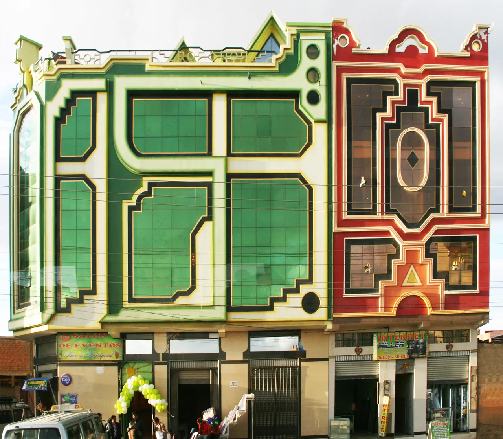

A cuatro mil metros sobre el nivel del mar, la burguesía aymara levanta palacios de policarbonato, aluminio y vidrio que desafían el canon austero de la arquitectura blanca. Una indagación sobre el cholet, la fiesta comunitaria y la dignidad material en El Alto.
Quien sube por primera vez desde la hondonada de La Paz hacia la planicie de El Alto experimenta una conmoción que no es únicamente atmosférica, aunque a cuatro mil metros sobre el nivel del mar el oxígeno escasee y el corazón se vea obligado a recordar su oficio con latidos más presurosos. En La Paz, la ciudad se repliega en la cuenca, protegida de los vientos helados de la cordillera, ordenada todavía por las viejas jerarquías coloniales donde el valle bajo corresponde a los herederos del señorío criollo y las laderas empinadas van recibiendo, como un sedimento inevitable, a las familias migrantes que descendieron del campo. Pero al coronar la ceja y desembocar en la inmensidad horizontal de El Alto, el orden del mundo parece invertirse de golpe. No hay sombra donde ocultarse ni barranco donde disimular las obras humanas: solo una llanura implacable de tierra seca, coronada por la presencia vigilante del Huayna Potosí y del Illimani, y sobre esa tierra, alzándose como naves de cristal y aluminio que hubieran aterrizado en medio de un mar de ladrillo crudo, los palacios policromados de la burguesía aymara.

Los llaman cholets, una palabra nacida de la mezcla socarrona entre chalet y cholo que las élites paceñas acuñaron con el propósito indisimulado de marcar una distancia burlona frente al ascenso económico de los campesinos y comerciantes indígenas. Pero ocurre con los agravios del lenguaje lo que tantas veces sucede con las herramientas materiales: quien los recibe puede tomarlos entre sus manos, limpiarlos de su veneno originario y convertirlos en un estandarte de victoria. Hoy en El Alto nadie baja la cabeza al pronunciar la palabra cholet. Al contrario, se la pronuncia con la satisfacción oronda del que ha pagado cada bolsa de cemento y cada plancha de vidrio con el sudor de su propio comercio, sin haberle pedido jamás un préstamo a los bancos de la ciudad blanca ni una subvención a los ministerios de la cultura oficial.
El responsable más visible de esta mutación formal es un hombre llamado Freddy Mamani Silvestre, que comenzó como ayudante de albañil, mezclando cal y arena bajo las órdenes de maestros severos, y que con los años fue incorporando a su oficio el dibujo empírico y la ingeniería hasta convertirse en el artífice de más de setenta edificios que desafían todas las convenciones aprendidas en las facultades occidentales de arquitectura. Cuando los críticos formados en las academias europeas vieron por primera vez estas construcciones de seis pisos vestidas con franjas de verde manzana, naranja eléctrico, amarillo solar y fucsia encendido, su reacción inmediata fue la repulsa estética. Hablaron de kitsch andino, de aberración compositiva, de barbarie decorativa. No comprendieron, porque su formación monástica se lo impedía, que el buen gusto de la modernidad capitalista —ese elogio perpetuo del gris, del concreto despojado y de la austeridad rectilínea— no es una ley universal de la belleza, sino la máscara piadosa con la que las clases dominantes disfrazan su propia esterilidad afectiva y celebran el luto de su imaginación.
Para entender un cholet es preciso comprender la estructura económica y ritual de la sociedad aymara urbana, que la socióloga Silvia Rivera Cusicanqui ha caracterizado admirablemente como una condición ch'ixi: una realidad abigarrada donde conviven, sin anularse ni fundirse en una armonía blanda, las formas comunitarias de organización precolonial y los circuitos más agresivos de la acumulación comercial transnacional. En la planta baja de cada cholet no hay un vestíbulo señorial ni una recepción desierta, sino una batería de tiendas de repuestos para camiones, locales de confección textil, ferreterías o depósitos de mercaderías que abren directamente a la vereda. Es la base material que alimenta el edificio, el suelo productivo donde el dinero circula a la vista de todos, sin la hipocresía de los distritos financieros occidentales.
Inmediatamente encima, ocupando el primer y segundo piso con techos de doble altura y ventanales inmensos, se encuentra el verdadero corazón del edificio: el salón de eventos. No se trata de un lujo accesorio ni de un salón de banquetes para celebraciones privadas y discretas; es la sede ceremonial de los presteríos y de las fraternidades folclóricas, las instituciones donde la comunidad aymara redistribuye la riqueza y consagra el prestigio de sus miembros a través del derroche festivo. Entrar a un salón de fiestas diseñado por Mamani es ingresar a una cámara de luz y color que parece inspirada tanto en los salones de baile de Las Vegas como en las ceremonias solares de Tiwanaku. Las columnas están envueltas en estucos con motivos geométricos que reproducen las líneas escalonadas de la chakana; de los techos cuelgan arañas gigantescas de cristal importadas de China que refractan la luz de cientos de lámparas LED policromadas, y los pisos de porcelanato pulido reflejan las polleras brillantes de las cholas que bailan al ritmo de las bandas de bronces durante tres días consecutivos.
Conviene detenerse en la figura del presterío, porque sin esta institución comunitaria el cholet no pasaría de ser un capricho extravagante de nuevos ricos. Para el pensamiento occidental, educado en el dogma calvinista de la acumulación silenciosa y austera, gastar cincuenta mil o cien mil dólares en tres días de fiesta patronal, contratando a los mejores grupos de cumbia de Lima o Buenos Aires y sirviendo cajas infinitas de cerveza helada a cientos de compadres, resulta una locura económica incomprensible. Pero en la cosmovisión aymara el dinero no tiene valor hasta que se hace visible y se disuelve en el abrazo colectivo. El preste no gasta para ostentar una vanidad solitaria: gasta para obligar al respeto de su linaje y para devolverle a su comunidad, en forma de música, comida y éxtasis compartido, parte de la fortuna que la Pachamama y el comercio le han permitido reunir. El salón de fiestas del cholet es, pues, el templo de esa liturgia profana.
Cuando los profesores de historia del arte recorren la avenida 16 de Julio de El Alto y se encuentran con una fachada que combina un león dorado en relieve, columnas que evocan el Templo de Kalasasaya y una marquesina de cristal espejado que parece extraída de una película de ciencia ficción de los años ochenta, su primer impulso es buscar el término degradante: pastiche, sincretismo ingenuo, anacronismo. Pasan por alto lo que Silvia Rivera Cusicanqui ha denominado la memoria larga del mundo andino. Las formas escalonadas que Freddy Mamani dibuja en sus fachadas no nacieron de un catálogo de materiales importados; son las mismas grecas que las mujeres tejen desde hace milenios en sus fajas y aguayos, las mismas líneas con que los alfareros de Tiwanaku decoraban sus keros para libar la chicha ceremonial. La diferencia radica en que Mamani ha sustituido la arcilla y la lana de llama por el aluminio compuesto, las placas de yeso moldeado y los perfiles de acero galvanizado.

Hay también en el cholet una lección silenciosa de coolhunting territorial que ningún consultor de tendencias de Milán o Nueva York alcanzaría a sospechar. El Alto no es una periferia pasiva que recibe con retraso los ecos de la moda global: es un nodo logístico transfronterizo donde se cruzan las rutas del contrabando de fardos de ropa usada de Chile, los repuestos electrónicos que llegan del puerto de Iquique, las telas sintéticas de la India y los cargamentos masivos de pantallas LED y porcelanatos enviados directamente desde Guangzhou y Shenzhen. El comerciante alteño viaja a Cantón, habla con proveedores chinos sin saber inglés mediante una calculadora de bolsillo donde se digitan cifras y descuentos, elige los colores de vidrio polarizado que mejor resisten la luz cortante de los Andes y regresa a su tierra para levantar un monumento a su propia capacidad de conectar dos extremos del planeta sin pasar por la tutela de las capitales criollas.
En los pisos superiores, el edificio se sosiega y se divide en departamentos de vivienda destinados al alquiler o a los hijos de la familia que van formando sus propios hogares. Y finalmente, como remate audaz que desafía la silueta de cualquier rascacielos convencional, en la terraza superior se levanta el chalet propiamente dicho: una casa unifamiliar completa, con su tejado a dos aguas, su chimenea decorativa, sus ventanas de aluminio dorado y su pequeño patio elevado sobre el vacío del altiplano. Allí arriba, a veinte metros del suelo y a tiro de piedra del viento helado de la cordillera, vive el dueño del edificio. Desde su ventana puede contemplar la llanura entera de El Alto, vigilar sus camiones que cruzan la frontera hacia Chile o hacia el Perú, y mirar a los ojos a las cumbres nevadas sin que ningún obstáculo se interponga entre su mirada y el horizonte.
No deja de ser profundamente elocuente la resistencia que el cholet genera en las élites tradicionales bolivianas. Acostumbradas durante siglos a que el indígena ocupe únicamente el papel del siervo dócil, del peón silencioso o del motivo folclórico para carteles de turismo, no soportan ver que ese mismo hombre andino gane más dinero que un magistrado supremo y se construya un palacio seis pisos más alto que las casas señoriales de Sopocachi o Calacoto. El buen gusto de las clases altas nunca fue una cuestión estética: fue siempre un arma de control social. El minimalismo burgués dice: nosotros no necesitamos gritar porque ya somos los dueños del país; ustedes, si quieren ser aceptados, deben aprender a callar, a vestir tonos apagados y a esconder su riqueza bajo una pátina de discreción. El cholet responde con un grito de neón de doce metros que se enciende a las siete de la tarde sobre la autopista.
La arquitectura moderna europea nos prometió que la forma debía seguir a la función, pero terminó reduciendo la vida humana a una cuadrícula de cubos idénticos donde el cuerpo se siente prisionero de una geometría sin alma. En el cholet, la función es la fiesta y la forma es el mito. El edificio respira con el ritmo de los presteríos de invierno y las ferias de verano; sus ventanas no son agujeros neutros para mirar la calle, sino ojos reflectantes que devuelven la mirada del sol del altiplano con una intensidad cegadora. Al final, cuando uno camina por las calles sin pavimentar de El Alto y ve alzarse estas fortalezas de color sobre el barro helado, comprende que no estamos ante una anécdota pintoresca, sino ante uno de los experimentos espaciales más radicales y valientes del siglo veintiuno en América Latina: una arquitectura que no le debe nada a nadie y que ha decidido que su propia fiesta es la única consagración que necesita.
Hay que subir a la terraza del cholet para comprender su última y más secreta paradoja. Arriba, donde el viento zumba contra las planchas de policarbonato y el frío de la noche congela el agua en los caños en cuestión de minutos, el chalet parece un barco encallado sobre un arrecife de cemento. Dentro de esa vivienda familiar, los muebles no son de diseño nórdico ni imitan las revistas de decoración europeas: hay sofás forrados en terciopelo rojo, televisores de sesenta pulgadas que transmiten partidos de fútbol y noticieros locales, y en una esquina, junto a una estufa a gas, un pequeño altar con la imagen de la Virgen de Copacabana rodeada de serpentinas, flores frescas y un vaso de cerveza que se renueva cada martes de ch'alla. Los dueños de casa no han abandonado sus costumbres al volverse prósperos; las han trasladado al cielo del altiplano, demostrando que la tradición no es un conjunto de cenizas congeladas que se guardan en un cofre, sino una brasa viva que sabe alimentarse de cualquier madera nueva que el viento ponga a su alcance.
Por eso, cuando los aviones comerciales inician su descenso hacia el aeropuerto internacional de El Alto y los pasajeros miran por la ventanilla, lo primero que divisan en la penumbra del crepúsculo no son los campanarios de las iglesias coloniales ni los rascacielos corporativos de las multinacionales, sino estos gigantes policromados que brillan en la meseta como cristales gigantescos. Son las huellas materiales de una rebelión pacífica pero irreversible: la prueba de que un pueblo puede ser aplastado durante siglos por la violencia de la conquista y el desprecio del racismo institucional, y sin embargo encontrar en el trabajo paciente, en la astucia comercial y en la alegría compartida de la fiesta la fuerza necesaria para reconstruir su propio horizonte. La nave de vidrio no va a despegar porque no necesita huir a ninguna parte: ha venido para quedarse y para recordarle a quien quiera mirar que en América Latina el porvenir se construye con las manos de los que nunca tuvieron permiso para soñar.
Fuentes.
- Rivera Cusicanqui, Silvia (2010). Ch'ixinakax utxiwa: una reflexión sobre prácticas y discursos descolonizadores. Tinta Limón.
- Mamani Silvestre, Freddy (2014). Arquitectura Cholet: nueva identidad aymara en El Alto. Registros de obra.
- Andreoli, Elisabetta (2014). La arquitectura de Freddy Mamani en Bolivia. Domus Magazine.
Investigación etnográfica y documental sobre la arquitectura neoandina en El Alto, La Paz.
Fuentes consultadas el 19.11.2026. Análisis e interpretación: RUMMOR. Edición privada para revisión.